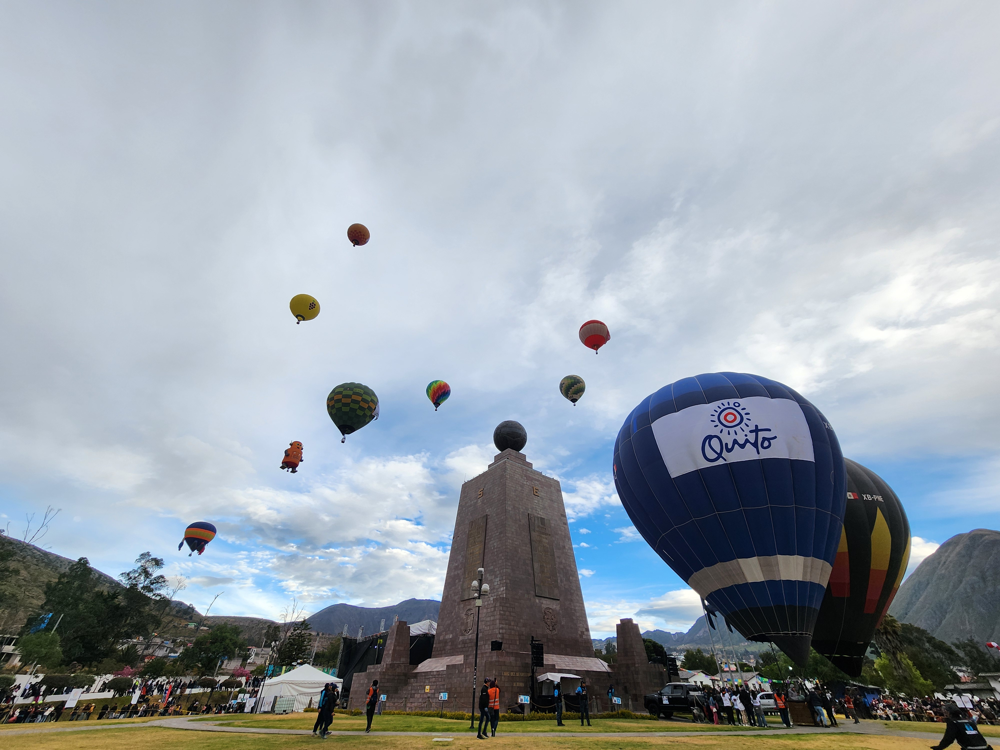

Planificación de viajes
- Diseño de itinerarios personalizados
- Logística de transporte
- Recomendaciones gastronómicas
Explora la diversidad del Ecuador capturada a través de un dispositivo móvil.

Capital cultural del Ecuador y Patrimonio de la Humanidad.

Destino ideal para aventura, cascadas y deportes extremos.

Uno de los ecosistemas más importantes del planeta.